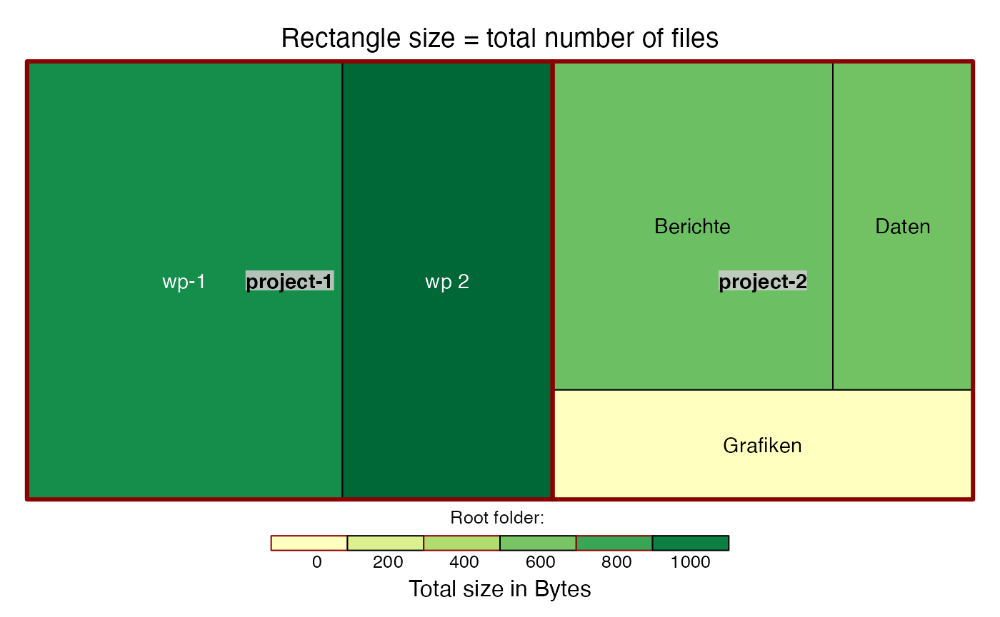

Working with Paths
Hauke Sonnenberg
2022-06-08
Source:vignettes/working_with_paths.Rmd
working_with_paths.RmdIn our FAKIN project we want to improve the (research) data management at KWB. We realised that we have difficulties in finding files. One reason is that our folder structures differ between the projects and they are often not intuitive at all.
This package contains functions that help analysing folder structures.
Providing File Path Information
Assume we have a vector of file paths. It may have been read from a file that was created by redirecting the output of the dir command in the Windows Command Window to a file (dir /s /b > paths.txt).
paths <- c(
"project-1/wp-1/input/file 1.csv",
"project-1/wp-1/input/file-2.csv",
"project-1/wp-1/analysis/summary.pdf",
"project-1/wp 2/input/köpenick_dirty.csv",
"project-1/wp 2/output/koepenick_clean.csv",
"project-2/Daten/file-1.csv",
"project-2/Grafiken/file 1.png",
"project-2/Berichte/bericht-1.doc",
"project-2/Berichte/bericht-2.doc"
)Plotting Paths
Let’s get a first impression on the paths defined above by plotting them. We provide a plot function that uses the sankeyNetwork() function from the networkD3 package. Make sure that this package is installed:
if (! require("networkD3")) {
install.packages("networkD3", repos = "https://cloud.r-project.org")
}## Loading required package: networkD3You can then use the plot_path_network() function from the kwb.fakin package to plot the example paths defined above:
fakin.path.app::plot_path_network(paths)The function accepts all arguments provided by networkD3::sankeyNetwork(). You may e.g. use the argument fontSize to increase the node labels:
fakin.path.app::plot_path_network(paths, fontSize = 16)Let’s always use this font size by defining a short helper function:
plot_16pt <- function(...) fakin.path.app::plot_path_network(..., fontSize = 16)By default only the first three levels of folders or files are shown. You can increase (or decrease) the number of shown levels by setting the max_depth argument:
plot_16pt(paths, max_depth = 4)Now, that all three traffic light colours (green, yellow, red) appear in the plot, we want to explain what these colours are intended to indicate:
Green: name is fully compliant with our naming rules. It consists only of alphanumeric letters, underscore, hyphen or dot.
Yellow: name is almost compliant with our naming rules. It constists only of alphanumeric letters, underscore, hyphen, dot or space.
Red: name does not comply with our naming rules. It contains at least one character that is not alphanumeric or underscore, hyphen, dot or space. In most of our cases this is due to German special characters, such as ‘ä’, ‘ö’, ‘ü’.
The naming rules are documented in our FAKIN Best Practices Document
Treemaps
The proportion of folder sizes can be visualised in so called tree-maps. We provide a function that uses the treemaps package to generate these plots.
The input to the function is a data frame with columns path, type and size, representing the file or folder paths, the type of path ("file" or "directory") and file size, respectively. Such a data frame can e.g. be retrieved by means of the function get_recursive_file_info(). Here, we provide some fake data:
file_info <- kwb.utils::noFactorDataFrame(
path = paths,
type = "file",
size = sample(1:1000, length(paths), replace = TRUE)
) From these file information, generate the treeplot with plot_treemaps_from_path_data(). Two plots are generated:
In the first plot, the rectangle sizes represent the total size of files that are contained in the corresponding folder and all of its subfolders. The colour indicates the total number of files that are contained in the folders.
In the second plot, the rectangle sizes represent the total number of files that are contained in the corresponding folder and all of its subfolders. The colour indicates the total size of files that are contained in the folders.
## Preparing data for 'root' ...
## Splitting paths ... ok. (0.00s)
## ok. (0.00s)
## Aggregating by first 2 path levels ...## Warning: `summarise_()` was deprecated in dplyr 0.7.0.
## Please use `summarise()` instead.
## This warning is displayed once every 8 hours.
## Call `lifecycle::last_lifecycle_warnings()` to see where this warning was generated.## Warning: `group_by_()` was deprecated in dplyr 0.7.0.
## Please use `group_by()` instead.
## See vignette('programming') for more help
## This warning is displayed once every 8 hours.
## Call `lifecycle::last_lifecycle_warnings()` to see where this warning was generated.## ok. (0.08s)
## Creating treemap 'size' ...## ok. (0.77s)
## Creating treemap 'files' ...
## ok. (0.19s)## NULLBy default the plots are saved to png files in the temporary directory. To let the plots show up here we set as_png to FALSE in the above call.
Selecting Paths
If you want to investigate a complex folder structure with hundreds or thousands of files the overview plot will not show up properly. It is then useful to select only a subsection of the folder structure for further investigation.
Selecting Paths from a List or Matrix of Subfolders
Once you have split a vector of paths into its subfolder names you may use the function kwb.pathdict::starts_with_parts() to filter for paths starting with a certain sequence of subfolders:
path_parts <- kwb.file::split_paths(paths)## Splitting paths ... ok. (0.00s)
start_parts <- c("project-1", "wp-1")
path_parts[kwb.pathdict::starts_with_parts(path_parts, start_parts)]## [[1]]
## [1] "project-1" "wp-1" "input" "file 1.csv"
##
## [[2]]
## [1] "project-1" "wp-1" "input" "file-2.csv"
##
## [[3]]
## [1] "project-1" "wp-1" "analysis" "summary.pdf"The function can also be used on a matrix of subfolders:
folders <- kwb.file::to_subdir_matrix(paths)
folders[kwb.pathdict::starts_with_parts(folders, start_parts), ]## [,1] [,2] [,3] [,4]
## [1,] "project-1" "wp-1" "input" "file 1.csv"
## [2,] "project-1" "wp-1" "input" "file-2.csv"
## [3,] "project-1" "wp-1" "analysis" "summary.pdf"
folders[kwb.pathdict::starts_with_parts(folders, c(start_parts, "input")), ]## [,1] [,2] [,3] [,4]
## [1,] "project-1" "wp-1" "input" "file 1.csv"
## [2,] "project-1" "wp-1" "input" "file-2.csv"Selecting Paths from a Path Tree
To simplify the selection of paths we wrote a function that converts a vector of path strings into a nested list. In that list, the folder names appear as the names of the list elements. Let’s try this out with the example paths defined above:
# Convert the vector of paths into a tree structure
path_tree <- kwb.fakin:::to_tree(paths)## Checking for duplicates in 'as.character(x)' ... ok. (0.00s)
# Show the structure of the tree
str(path_tree)## List of 2
## $ project-1:List of 2
## ..$ wp 2:List of 2
## .. ..$ input :List of 1
## .. .. ..$ köpenick_dirty.csv: chr ""
## .. .. ..- attr(*, "class")= chr [1:2] "path_tree" "list"
## .. ..$ output:List of 1
## .. .. ..$ koepenick_clean.csv: chr ""
## .. .. ..- attr(*, "class")= chr [1:2] "path_tree" "list"
## .. ..- attr(*, "class")= chr [1:2] "path_tree" "list"
## ..$ wp-1:List of 2
## .. ..$ analysis:List of 1
## .. .. ..$ summary.pdf: chr ""
## .. .. ..- attr(*, "class")= chr [1:2] "path_tree" "list"
## .. ..$ input :List of 2
## .. .. ..$ file 1.csv: chr ""
## .. .. ..$ file-2.csv: chr ""
## .. .. ..- attr(*, "class")= chr [1:2] "path_tree" "list"
## .. ..- attr(*, "class")= chr [1:2] "path_tree" "list"
## ..- attr(*, "class")= chr [1:2] "path_tree" "list"
## $ project-2:List of 3
## ..$ Berichte:List of 2
## .. ..$ bericht-1.doc: chr ""
## .. ..$ bericht-2.doc: chr ""
## .. ..- attr(*, "class")= chr [1:2] "path_tree" "list"
## ..$ Daten :List of 1
## .. ..$ file-1.csv: chr ""
## .. ..- attr(*, "class")= chr [1:2] "path_tree" "list"
## ..$ Grafiken:List of 1
## .. ..$ file 1.png: chr ""
## .. ..- attr(*, "class")= chr [1:2] "path_tree" "list"
## ..- attr(*, "class")= chr [1:2] "path_tree" "list"
## - attr(*, "class")= chr [1:2] "path_tree" "list"The path tree is a list of lists with the top level elements representing the top level folders of the paths, the second level elements representing the sub-folders of the top level folders, and so on. With that tree structure, it is easy to select a sub-tree by just using the dollar operator $ for lists. If, for example, we want to select the paths belonging to project 1, we can write:
# Select the sub-tree below "project-1"
subtree <- path_tree$`project-1`
# Show the sub-tree
str(subtree)## List of 2
## $ wp 2:List of 2
## ..$ input :List of 1
## .. ..$ köpenick_dirty.csv: chr ""
## .. ..- attr(*, "class")= chr [1:2] "path_tree" "list"
## ..$ output:List of 1
## .. ..$ koepenick_clean.csv: chr ""
## .. ..- attr(*, "class")= chr [1:2] "path_tree" "list"
## ..- attr(*, "class")= chr [1:2] "path_tree" "list"
## $ wp-1:List of 2
## ..$ analysis:List of 1
## .. ..$ summary.pdf: chr ""
## .. ..- attr(*, "class")= chr [1:2] "path_tree" "list"
## ..$ input :List of 2
## .. ..$ file 1.csv: chr ""
## .. ..$ file-2.csv: chr ""
## .. ..- attr(*, "class")= chr [1:2] "path_tree" "list"
## ..- attr(*, "class")= chr [1:2] "path_tree" "list"
## - attr(*, "class")= chr [1:2] "path_tree" "list"Note that the element name project-1 needs to be quoted in special quotes because, in R, the hyphen would else be interpreted as minus operator.
To convert the tree structure back to the path strings, use flatten_tree:
kwb.fakin:::flatten_tree(subtree)## [1] "wp 2/input/köpenick_dirty.csv" "wp 2/output/koepenick_clean.csv"
## [3] "wp-1/analysis/summary.pdf" "wp-1/input/file 1.csv"
## [5] "wp-1/input/file-2.csv"You can plot the sub-tree by passing it directly to plot_path_network, or here to our helper function, without prior conversion:
plot_16pt(kwb.fakin:::flatten_tree(subtree))Quality of File and Folder Names
The automatic processing of files may fail due to special characters (e.g. German Umlaute) that are contained in the folder or file names. The package contains a function ascii_stats that calculates the percentages of strings containing or not containing special (non-ASCII) characters.
kwb.fakin:::ascii_stats(paths)## nonAscii
## FALSE TRUE
## 88.88889 11.11111The aim should be to reduce the percentage of non-ASCI characters.
Quality of Folder Structures
If we modify folder structures in order to make them more intuitive we need a tool to measure the improvement. Therefore I created an account on the following website:
https://www.optimalworkshop.com/treejack
There, you can define tree structures of which interactive web-pages are created where users are asked to navigate to a certain file in the tree. Behind the scenes the web page tracks the clicks of the user on his way through the tree. The treejack service provides an import functionality where you can define the structure of the tree by giving a set of text lines with each line representing a branch or a leaf of the tree.
The function subtree_for_treejack creates the text that is required here:
kwb.fakin:::subtree_for_treejack(root = "project-1", paths)## Filter for paths starting with project-1/ ...
## ok. Remaining paths: 5
## Convert to relative paths ... ok.
## Splitting paths ... ok. (0.00s)
## Splitting paths ... ok. (0.00s)
## Splitting paths ... ok. (0.00s)
## Splitting paths ... ok. (0.00s)
##
## ================================================================
##
## Copy and paste the output below to the 'Bulk import' input field
## at https://www.optimalworkshop.com
##
## ================================================================
##
## wp 2
## input
## output
## wp-1
## analysis
## inputAnalysis of Paths
We can split the paths into their parts using the split_paths function from the kwb.file package:
parts <- kwb.file::split_paths(paths)## Splitting paths ... ok. (0.00s)
parts[1:3]## [[1]]
## [1] "project-1" "wp-1" "input" "file 1.csv"
##
## [[2]]
## [1] "project-1" "wp-1" "input" "file-2.csv"
##
## [[3]]
## [1] "project-1" "wp-1" "analysis" "summary.pdf"It may be useful to convert the list that is returned by split_paths into a matrix:
subdirs <- kwb.file::to_subdir_matrix(parts)| project-1 | wp-1 | input | file 1.csv |
| project-1 | wp-1 | input | file-2.csv |
| project-1 | wp-1 | analysis | summary.pdf |
| project-1 | wp 2 | input | köpenick_dirty.csv |
| project-1 | wp 2 | output | koepenick_clean.csv |
| project-2 | Daten | file-1.csv | |
| project-2 | Grafiken | file 1.png | |
| project-2 | Berichte | bericht-1.doc | |
| project-2 | Berichte | bericht-2.doc |
In the matrix, each row represents a path and each column represents a depth level.
If you have only one path, you may create the paths to all direct parent directories using the function all_path_levels. This is how subtree_for_treejack creates the text for the bulk import to Treejack (see above).
(parent_paths <- kwb.fakin:::all_path_levels(paths[1]))## Splitting paths ... ok. (0.00s)## [1] "project-1" "project-1/wp-1"
## [3] "project-1/wp-1/input" "project-1/wp-1/input/file 1.csv"
parents <- kwb.file::to_subdir_matrix(parent_paths)| project-1 | |||
| project-1 | wp-1 | ||
| project-1 | wp-1 | input | |
| project-1 | wp-1 | input | file 1.csv |